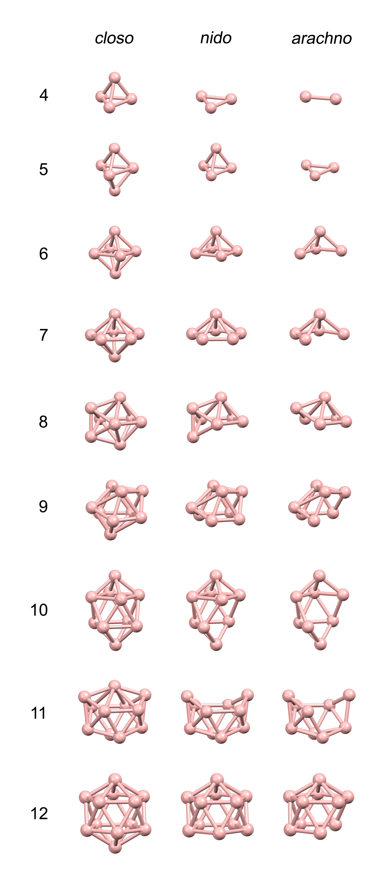
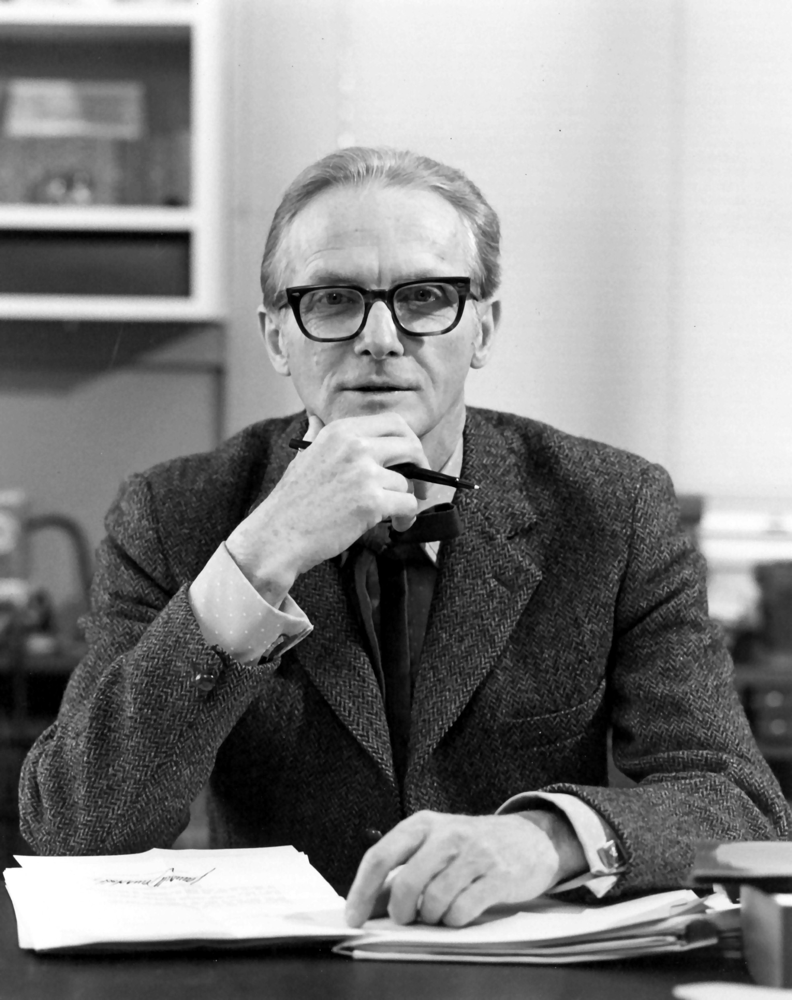

The main structural types of borane clusters
The structure of borane clusters and their derivatives, such as carboranes and metallaboranes, can be predicted with using Polyhedral Skeletal Electron Pair Theory (PSEPT), more widely known as the Wade's rules. It relates the number of skeletal electron pairs (SEPs) to the geometry of the cluster. This allows us to classify boron clusters according to how many vertices of a parent closed deltahedron are occupied by boron or other heteroatoms.
Closo clusters, which have complete deltahedral frameworks with n vertices, contain n+1 SEPs; Nido clusters, derived from a closo deltahedron with one vertex removed, and contain n+2 SEPs; Arachno clusters, derived from a closo deltahedron with two vertices removed, follow the general and contain n+3 SEPs.
Sculpting the Three-Center Symphony

William Lipscomb NOBEL PRIZE LAUREATE IN CHEMISTRY (1976)
History
Boron hydride cluster structures began to be determined in 1948 with the characterization of decaborane. William Lipscomb won the 1976 Nobel Prize in Chemistry for this and later crystallographic studies, which revealed the prevalence of deltahedral borane structures. This work led to polyhedral skeletal electron pair theory and Wade’s rules for predicting many cluster structures. The Nobel Prize in Chemistry 1976 was awarded to William N. Lipscomb "for his studies on the structure of boranes illuminating problems of chemical bonding".
Nobel Prize 1976 summary